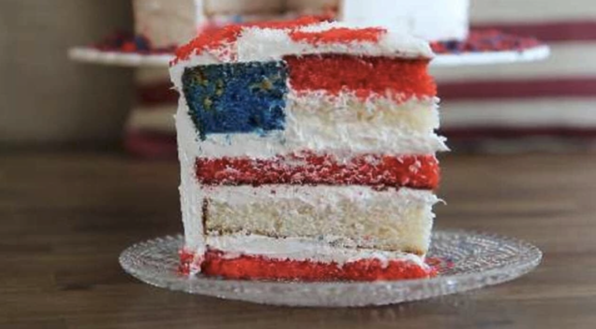

American Flag Cake

Description
Unfurl the red, white, and blue with this beautiful, easy, and patriotic flag cake perfect for the 4th of July,
Memorial Day, or any favorite occasion. Assemble and frost the pretty cake and wait for the oohs and ahhs!
Ingredients
- 2 (15.25 ounce) packages white cake mix
- 9 egg whites
- 1 cup vegetable oil
- 3 ¾ cups whole milk
- 2 tablespoons clear vanilla extract
- 2 tablespoons red food coloring
- 1 tablespoon blue food coloring
- 1 cup white chocolate chips
- 10 cups fluffy white frosting
- 1 tablespoon white chocolate chips, or as needed
- 2 tablespoons white sugar, or as needed
- 1 4-inch round paper or cardboard stencil